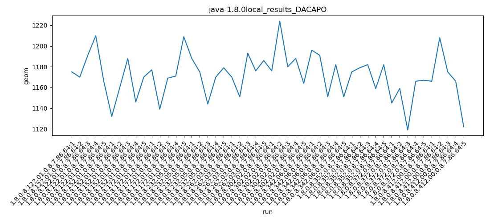
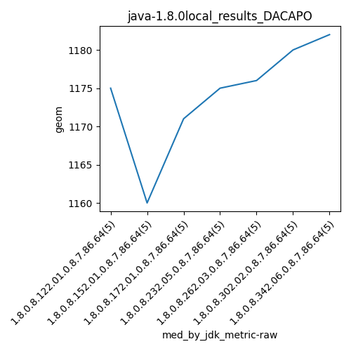
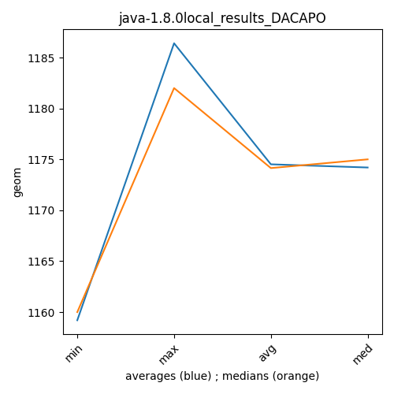

java-1.8.0 DACAPO
Context at bottom
/home/jvanek/git/benchmarks-in-nested-virtualisation-toolchain/final_results/local_results/local_results_JMH
java-1.8.0
DACAPO
/home/jvanek/git/benchmarks-in-nested-virtualisation-toolchain/final_results/local_results/local_results_J2DBENCH
java-1.8.0
DACAPO
/home/jvanek/git/benchmarks-in-nested-virtualisation-toolchain/final_results/local_results/local_results_RADARGUNs1
java-1.8.0
DACAPO
/home/jvanek/git/benchmarks-in-nested-virtualisation-toolchain/final_results/local_results/local_results_RADARGUNs3
java-1.8.0
DACAPO
/home/jvanek/git/benchmarks-in-nested-virtualisation-toolchain/final_results/local_results/local_results_SPECJBB
java-1.8.0
DACAPO
/home/jvanek/git/benchmarks-in-nested-virtualisation-toolchain/final_results/local_results/local_results_DACAPO
java-1.8.0
DACAPO
local_results_DACAPO
final score
Expected number of java-1.8.0 JDKs: 7
1st avgmed_alljdks_metric:
/home/jvanek/git/benchmarks-in-nested-virtualisation-toolchain/final_results/result_processing.py /home/jvanek/git/benchmarks-in-nested-virtualisation-toolchain/final_results/local_results/local_results_DACAPO geom False
values: [1175, 1170, 1191, 1210, 1166, 1132, 1160, 1188, 1146, 1170, 1177, 1139, 1169, 1171, 1209, 1188, 1175, 1144, 1170, 1179, 1170, 1151, 1193, 1176, 1186, 1176, 1224, 1180, 1188, 1164, 1196, 1191, 1151, 1182, 1151]

Expected number of iterations: 5
final number of values: 35 out of 35
Pass rate: 100.0%
values: (1132, 1224, 1174.5142857142857, 1175)

** accuracy from all jdks and runs
more is better
MIN: 1132
MAX: 1224
AVG: 1174.5142857142857
MED: 1175
Relative differences 1:
MIN-MAX: 8.0 %
MIN-AVG: 4.0 %
MIN-MED: 4.0 %
MAX-MIN: -8.0 %
MAX-AVG: -4.0 %
MAX-MED: -4.0 %
AVG-MED: 0.0 %
stored to java-1.8.0.properties. sort | uniq that!
2nd avgmed_by_jdk_metric:
values: [1182.4, 1159.2, 1173.0, 1171.2, 1175.2, 1186.4, 1174.2]

values: [1175, 1160, 1171, 1175, 1176, 1180, 1182]

values: (1159.2, 1186.4, 1174.5142857142857, 1174.2)
values: (1160, 1182, 1174.142857142857, 1175)

** accuracy from all jdks where runs were avged
more is better
MIN: 1159.2
MAX: 1186.4
AVG: 1174.5142857142857
MED: 1174.2
Relative differences 1:
MIN-MAX: 2.0 %
MIN-AVG: 1.0 %
MIN-MED: 1.0 %
MAX-MIN: -2.0 %
MAX-AVG: -1.0 %
MAX-MED: -1.0 %
AVG-MED: -0.0 %
stored to java-1.8.0.properties. sort | uniq that!
** accuracy from all jdks where runs were medianed
more is better
MIN: 1160
MAX: 1182
AVG: 1174.142857142857
MED: 1175
Relative differences 1:
MIN-MAX: 2.0 %
MIN-AVG: 1.0 %
MIN-MED: 1.0 %
MAX-MIN: -2.0 %
MAX-AVG: -1.0 %
MAX-MED: -1.0 %
AVG-MED: 0.0 %
stored to java-1.8.0.properties. sort | uniq that!
pass rates:
local_results_DACAPO=100.0%
Context:
- local_results
- DACAPO